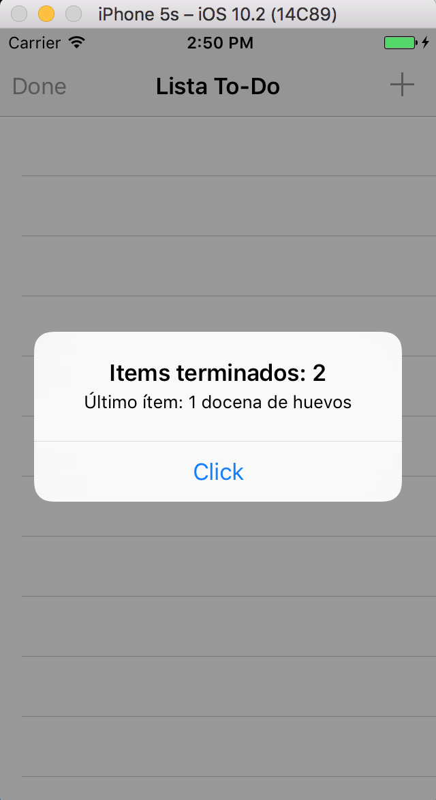
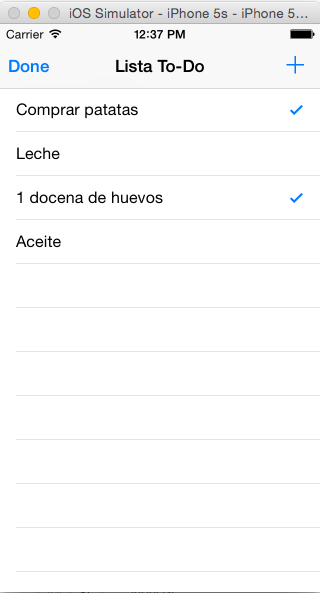
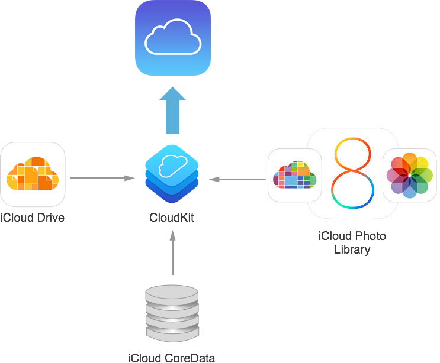
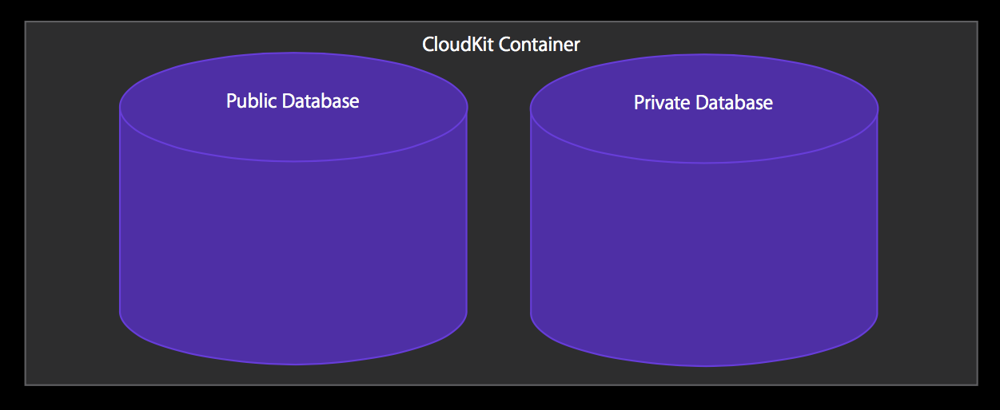

Sesión 3: iCloud y CloudKit¶
Servicios de las plataformas móviles - iOS
Domingo Gallardo - domingo.gallardo@ua.es
Departamento Ciencia de la Computación e Inteligencia Artificial
Master Programación de Dispositivos Móviles
2017-18
iCloud¶

- iCloud es un servicio de Apple que permite a un usuario acceder a su contenido personal (datos, documentos) en todos sus dispositivos utilizando su Apple ID.
- iCloud consigue esto combinando almacenamiento en la nube y APIs dedicadas integradas en el sistema operativo.
- Apple proporciona la infraestructura de servidores, de transmisión de datos y de cuentas de usuario, facilitando el trabajo a los desarrolladores que no necesitan crear sus propios servicios ni recurrir a soluciones de terceros.
Filosofía de iCloud (para el usuario de iOS)¶
- La idea principal tras iCloud es eliminar la sincronización explícita entre dispositivos.
- Un usuario nunca necesita pensar sobre la sincronización, y la app nunca interactúa directamente con los servidores de iCloud.
- Para el usuario, los cambios aparecen automáticamente en todos los dispositivos conectados a la cuenta iCloud.
- Para el desarrollador, depende del API de iCloud que se utilice estos cambios son más o menos automáticos.
Cuenta iCloud¶

- Todo usuario de Apple puede activar una cuenta de iCloud usando su Apple ID
- Permite identificarse y mantenerse logeado en el dispositivo
- Puede activarse desde un Mac, desde un dispositivo iOS, desde la web o desde el simulador. Si es la primera vez que usas iCloud desde el simulador debes logearte con tu Apple Id en icloud.com y aceptar los términos.
- Permite mantener el estado en aplicaciones ejecutándose en distintos dispositivos: Recordatorios, Notas, ...
- El sistema operativo encripta todos los datos antes de transmitirlos a los servidores de iCloud, los cuales almacenan los datos también en formato encriptado. Se utilizan tokens para la autenticación.
Distintas APIs¶
- Almacenamiento clave-valor en iCloud: para mantener el estado de la aplicación (puntuación de un juego, última página leída, etc.).
- Documentos en iCloud: para gestionar documentos en la nube y mantenerlos sincronizados entre iPhone/iPad/Mac.
- iCloud con Core Data: para mantener de forma automática en iCloud una copia de todos los datos de la app gestionados con Core Data. Versión inicial con muchos problemas, muy mejorado en las últimas versiones.
- CloudKit (a partir de iOS 8): nueva tecnología a partir de iOS 8 que permite mayor flexibilidad y control. Basado en registros con diccionarios clave-valor, enfoque muy similar a las tecnologías NoSQL.
- API de transporte que no mantiene un estado local.
- Basada en peticiones y respuestas asíncronas.
Preparación de aprovisionamiento y permisos para iCloud¶
- Para desarrollar con iCloud es necesario estar registrado como desarrollador en el programa de desarrollo de Apple. También puedes hacerlo con tu Apple ID registrado en el equipo de la UA.
- Para usar los servicios de iCloud es necesario crear un perfil de aprovisionamiento con un App Id concreto, añadir el servicio de iCloud y activar el permiso (capabilities) en la app con XCode.
- Si estás registrado en el equipo de desarrollo con un rol de administrador (o tienes una cuenta de pago en la que tienes todos los permisos de tu equipo), se puede hacer todo automaticamente desde XCode.
- Puedes utilizar el perfil de aprovisionamiento
UA ToDoListCloudKit Profilecreado en el member center del equipo de la universidad. El bundle ID de la app debe seres.ua.mastermoviles.ToDoListCloudKit.
Creación del App ID¶
- Se debe crear el App ID que otorgue la capacidad de acceso a iCloud.
- Creamos el permiso (App ID)
Master Moviles ToDoListCloudKitque incluye la capacidad de iCloud.


Confirmación del App ID¶
- La activación del permiso de iCloud aparecerá en amarillo porque requiere una configuración posterior relacionada con CloudKit (lo veremos más adelante).
API de almacenamiento clave-valor¶

- Permite guardar y recuperar en iCloud claves y valores desde los dispositivos en los que el usuario está registrado con su Apple Id.
- Para acceder a los valores debemos usar la clase NSUbiquitousKeyValueStore.
- Puedes almacenar
Strings, valores escalares comoBOOLoDouble, diccionarios y también objetos de cualquiera de los siguientes tipos:NSNumber,NSString,NSDate,NSData,NSArray, orNSDictionary. - El espacio de almacenamiento total, para un usuario dado y una app, es de 1 MB y un máximo de 1024 claves.
- Para obtener el objeto compartido iCloudKeyValueStore:
1 | let iCloudStore = NSUbiquitousKeyValueStore.default |
Método synchronize¶
1 | func synchronize() -> Bool |
true si las claves y valores en memoria y en disco están
sincronizados o false si ha sucedido algún error. Por ejemplo,
devuelve false si la app no se ha compilado con las peticiones
adecuadas de entitlement o si el usuario no está logeado e iCloud.
- Los cambios al almacén de claves-valor se salvan en memoria. El
sistema sincroniza automáticamente estos datos con la caché del
disco en los momentos apropiados. Por ejemplo, cuando el app pasa a
segundo plano o cuando se reciben cambios de iCloud.
- Este método no fuerza la subida a iCloud de los nuevos valores y
claves, sino que hace saber a iCloud que los valores están listos
para ser subidos. El sistema controla cuándo subir los datos.
- No es obligatorio su uso, pero es recomendable cuando estamos
trabajando con el simulador para asegurarnos de que el almacén de
claves-valor se guarda.
- Se recomiendo también hacerlo después de lanzar la app o cuando
vuelve al primer plano.
Ejemplo de uso de synchronize al lanzar la app¶
1 2 3 4 5 6 7 8 9 | func application(application: UIApplication, didFinishLaunchingWithOptions launchOptions: [NSObject: AnyObject]?) -> Bool { let store = NSUbiquitousKeyValueStore.default if (store.synchronize()) { print("Sincronización OK") } else { print("Problemas en la sincronización") } return true } |
Guardar valores en el almacén de claves-valor¶
- Para actualizar los valores hay que usar los métodos set. El
primer parámetro es el valor a guardar y el segundo la clave:
set(Bool, forKey: String)set(Double, forKey: String)set(Int64, forKey: String)set([Any]?, forKey: String)- ...
- Por ejemplo,
set(Int64, forKey: String)actualiza en el almacén el valor long long (Int64) asociándolo a una clave especificada:
1 | store.set(Int64(100), forKey: "puntuacion") |
Obtención de valores del almacén de claves-valor¶
-
Funciones que obtienen los distintos tipos de datos a partir de una clave (una cadena):
array(forKey: String)bool(forKey: String)dictionary(forKey: String)string(forKey: String)- ...
-
Por ejemplo,
longlong(forKey: String)devuelve el valorInt64asociado a una clave especificada:
1 | let puntuacion = Int(store.longLong(forKey:"puntuacion")) |
- Parámetros y resultados del método:
forKey: un String que es la clave en el almacén de claves-valor.- Devuelve: el valor asociado a la clave o 0 si la clave no existe o no contiene un valor numérico
Definiendo un observador de cambios¶
- Además de almacenar los valores podemos recibir notificaciones
(
NSNotificationgestionadas por elNotificationCenter) de cambio de los valores en otros dispositivos conectados a iCloud. - En el lanzamiento del app hay que registrarse para la notificación
NSUbiquitousKeyValueStoreDidChangeExternallyNotification. - La notificación se envía cuando el valor de una o más claves han cambiado debido a datos que han llegado desde iCloud. La notificación no se envía cuando la propia app ha cambiado los valores.
- El diccionario atributo
userInfode la notificación contiene la razón de la notificación, así como una lista de los valores cambiados. - El objeto en la notificación es el
NSUbiquitousKeyValueStorecuyo contenido ha cambiado.
Ejemplo de definición de un observador de la notificación¶
- Registramos una clausura para la notificación con el nombre
NSUbiquitousKeyValueStore.didChangeExternallyNotificationen el momento de lanzar la app, y llamamos al métodosynchronize()para obtener las parejas de claves-valor más recientes.
1 2 3 4 5 6 7 8 9 10 11 12 | func application(application: UIApplication, didFinishLaunchingWithOptions launchOptions: [NSObject: AnyObject]?) -> Bool { NotificationCenter.default.addObserver( forName: NSUbiquitousKeyValueStore.didChangeExternallyNotification, object: NSUbiquitousKeyValueStore.default(), queue: OperationQueue.main) { (notification) in let ubiquitousKeyValueStore = notification.object as! NSUbiquitousKeyValueStore ubiquitousKeyValueStore.synchronize() } } |
Práctica: ToDoList con iCloud clave-valor (2)¶


- Debes modificar la aplicación para que se guarden en el almacén clave-valor
de iCloud del usuario:
- Número de tareas terminadas
- Última tarea terminada
- Debes usar la app en el simulador habiéndote logeado en iCloud en el propio simulador.
- Prueba a ejecutar distintas veces la app desde el simulador, incluso a eliminar la aplicación y volver a instalarla. Debería conservarse el número de tareas terminadas y el nombre de la última. Se borrarán las tareas pendientes (las guardaremos en CloudKit en la sesión siguiente).
- Muestra los datos guardados con una alerta al arrancar la app.
CloudKit¶
Introducción a CloudKit¶

- CloudKit es un proyecto interno de Apple en el que se basan muchas de sus APIs de persistencia.
- Su uso se ofrece a les desarrolladores en la WWDC de 2014, para apps a partir de iOS 8.
- Acceso a servidores de iCloud.
- Usa las cuentas iCloud de los usuarios.
- Bases de datos públicas (de la app) y privadas (de cada usuario).
- Permite datos estructurados y datos bulk.
- Tecnología de transporte, no proporciona base de datos local.
CloudKit trabaja sobre registros en iCloud¶
- CloudKit proporciona una forma de mover datos estructurados entre tu aplicación y iCloud.
- CloudKit trabaja sobre registros, diccionarios de parejas clave-valor con cada clave representando un campo del registro.
- El valor de cada campo suele ser un tipo de datos simple como una cadena, una fecha o un número, pero es posible almacenar también bloques de datos arbitrarios (ficheros),
- Es posible guardar en los valores referencias a otros registros, permitiendo definir relaciones entre registros.
Registros públicos y privados¶
- Se pueden guardar registros de forma pública y privada, dependiendo de si se guardan en la base de datos pública o en la privada.
- Los registros públicos son accesibles a todos los usuarios de la app, aunque el usuario no se haya identificado con su cuenta de iCloud.
- Los registros privados son sólo visibles por el usuario actual logeado en iCloud.
- Para salvar registros en la base de datos pública es necesario que el usuario esté identificado, porque siempre se guarda el usuario propietario del registro.
Tecnología de transporte¶
- CloudKit no proporciona ninguna forma de almacenar datos localmente.
- Es un servicio para mover datos a y desde iCloud y no está pensado para reemplazar los modelos de datos ya existentes en tu app (CoreData).
- El objetivo del framework es complementar estos modelos con una forma de empaquetar los datos para iCloud y recibir actualizaciones posteriores sobre esos datos.
- Con CloudKit, tu eres el responsable de mover los datos desde tu app a iCloud y desde iCloud a la app. Aunque CloudKit proporciona facilidades para mantenerte informado cuando sucede un cambio, tu debes obtener esos cambios explícitamente.
- Debido a que eres el responsable de obtener y salvar los datos, debes de asegurarte de que los datos se obtienen en el momento oportuno y en el orden correcto, y de manejar los errores que se producen.
Elementos de CloudKit¶
- Contenedores
- Bases de datos
- Registros
- Zonas de registros
- Identificadores
- Referencias
- Assets
Contenedores¶

- Múltiples apps y usuarios tienen acceso a iCloud, pero los datos se
encuentran segregados y encapsulados en particiones llamadas
contenedores. - Los contenedores de tus apps no pueden ser usados por apps de otro desarrollador.
- Puedes compartir un contenedor entre varias apps.
- Existe un contenedor por defecto para cada app, pero puedes crear contenedores adicionales.
- El identificador por defecto se llama igual que el bundle ID de la app.
- Los contenedores adicionales deben tener un nombre único entre todas las apps de los desarrolladores.
- Los contenedores no pueden borrarse.
Gestión en el member center¶
- Una de las opciones del member center permite gestionar contenedores de iCloud.
- Creamos uno con el identificador
iCloud.ua.mastermoviles.ToDoListCloudKitque utilizaremos en la app ToDoList. - No es posible borrar contenedores.
Asignación del container al App ID¶
- Incluimos en el App ID el contenedor de iCloud anterior.
Creación del perfil de aprovisionamiento¶
- Creamos el perfil de aprovisionamiento
UA ToDoListCloudKit Profilecon el App ID anterior.

Actualización de capacidades de la app ToDoListCloudKit¶

Dashboard¶
- Dashboard es una interfaz web con la que podemos gestionar nuestros contenedores
- El administrador del equipo de desarrollo puede gestionar permisos para el resto de miembros. Los permisos se definen a nivel de contenedor.
- https://icloud.developer.apple.com/dashboard/
- Permite:
- Crear, visualizar, editar y borrar esquemas, registros, etc.
- Estadísticas de uso
- Administración de acceso
- Configuración de despliegue
Dashboard: permisos¶
- Comprobamos los permisos de los miembros del equipo de la universidad en el dashboard de iCloud.
Dashboard: tipos de registros¶
Dashboard: logs¶
Clase CKContainer¶
- La clase con la que trabajar para gestionar el contenedor es CKContainer
- La debemos usar para:
- Obtener las bases de datos públicas y privadas
- Obtener el identificador del contenedor
- Determinar el estado del acceso de la cuenta iCloud del usuario
- Solicitar y determinar permisos de la app
- Ejecutar operaciones sobre el contenedor
- Descubrir registros de usuarios
- En CloudKit todas las operaciones son asíncronas: se pasa el código de callback al que se llamará cuando la petición devuelva la respuesta.
Características sociales de CloudKit¶

- CloudKit permite descubrirse entre ellos a usuarios que están usando
nuestra app. Los usuarios podrán compartir datos de identidad
(nombre de usuario y correo elctrónico) si:
- Están en los contactos del usuario actual
- Han dado el permiso a la app
- Para que otros usuarios puedan acceder a la información del usuario
actual, hay que solicitarle su aprobación llamando a la función
requestApplicationPermission - Se le pasa como parámetro
completionHandlerel manejador de la respuesta del usuario. Recibiremos dos parámetros, elapplicationPermissionStatus(constante que indica lo que ha respondido el usuario) y un objetoerrorque seránilsi todo ha ido correctamente.
Características sociales de CloudKit¶
- Se pueden buscar los usuarios que han dado permiso y que están en la agenda del usuario actual por su dirección de correo electrónico registrada en el Apple Id.
- La función
discoverAllIdentities(completionHandler:)deCKContainerpermite obtener estos usuarios- Se le pasa como parámetro
completionHandler, una función que la consulta ejecutará cuando se obtengan los resultados. Tiene dos parámetros:- Un array de objetos
CKUserIdentityque corresponde con los contactos del usuario que han autorizado conocerlos. Si no hay usuarios, el array estará vacío. - Un objeto error si sucede algún problema, o
nilsi los IDs se han obtenido correctamente.
- Un array de objetos
- Se le pasa como parámetro
Ejemplo de código de características sociales¶
1 2 3 4 5 6 7 8 9 10 11 12 13 14 15 16 17 18 19 | let container = CKContainer.default() print("Container: ") print(container) // Solicitamos permiso para que el usuario se haga descubrible container.requestApplicationPermission( CKApplicationPermissions.userDiscoverability, completionHandler: { (permissionStatus, error) in print("Permiso concedido: " + "\(permissionStatus == CKApplicationPermissionStatus.granted)")}) // Obtenemos los usuarios de la app que han dado permiso container.discoverAllIdentities(completionHandler: { (optUsers, error) in if let users = optUsers { for user in users { print(user) // usamos user.userRecordID para buscar // registros públicos de un usuario } }}) |
Bases de datos¶

Bases de datos¶

Bases de datos¶
- Las bases de datos son instancias de la clase
CKDatabase - Cada app tiene acceso a dos bases de datos
- Base de datos pública
- Base de datos privada
- Se obtienen a través del
CKContainer:
1 2 3 | let container = CKContainer.default() let privateDB = container.privateCloudDatabase let publicDB = container.publicCloudDatabase |
Bases de datos¶

Registros¶

Creación de registros¶
- Se definen con la clase CKRecord.
- Conjunto de parejas clave y valor con un identificador único de la
clase.
CKRecordID - Se crean en tiempo de ejecución indicando un tipo de registro
definido por un
String.
1 | let tareaRecord = CKRecord(recordType: "Artista") |
- Una vez creado el registro se añaden valores a sus campos (que también se crean dinámicamente):
1 2 3 4 5 6 | let nombre = "Jonhn Lennon" tareaRecord["artista"] = nombre as NSString let formatter = DateFormatter() formatter.dateFormat = "yyyy/MM/dd" let fecha = formatter.date(from: "1940/10/09") tareaRecord["fechanacimiento"] = fecha! as NSDate |
Datos en los registros¶
- El protocolo
CKRecordValue
define los posibles valores que pueden haber en los atributos de los registros:
NSString: CadenasNSNumber: Números, incluidos enteros y punto flotante.NSData: Bytes arbitrarios de datos (por ejemplo, la serialización binaria de unstruct. No usar para almacenar ficheros binarios grandes, usarCKAsseten su lugar.NSDate: FechasCLLocation: Coordenadas geográficasCKReference: Referencias a otros registros para crear relaciones entre ellos.CKAsset: Fichero binario.- Arrays de todo lo anterior
Grabación de registros¶
- Se añaden registros a una base de datos usando la función
save, a la que hay que pasar un bloque que recibe el registro salvado y un error (en caso en que no se haya podido salvar).
1 2 3 4 | privateDB.save(tareaRecord, completionHandler: { (record: CKRecord?, error: Error?) -> Void in print("Registro: \(record)") print("Error: \(error)")}) |
Relaciones entre registros: referencias¶

Referencias¶

- Clase CKReference
- El servidor entiende las relaciones Padre Hijo
- Borrados en cascada
- Cuidado con los problemas de integridad, será normal que no existan referencias
- Se prefieren las referencias hacia atrás para modelar las relaciones anteriores
Queries¶
- Para realizar una consulta se debe utilizar la clase
CKQuerypara buscar objetos que cumplen una determinada condición en una base de datos. - La consulta almacena los parámetros de búsqueda, incluyendo el tipo de registros a buscar, el criterio (predicado) a aplicar, y el parámetro de ordenación que aplicar a los resultados.
- El objeto de la búsqueda se usa para ejecutar una consulta en la
base de datos usando el método
performSe le pasa un manejador al que se llamará cuando se obtengan los resultados. La operación de búsqueda se restringe a los objetos de una zona (se pasanilpara la zona por defecto). - Para realizar consultas con más control sobre el número de registros
devueltos, o utilizar un cursor definido por el límite de registros
devueltos, hay que realizar una
CKQueryOperation.
Ejemplo¶
- Query que devuelve todos los registros de tipo "Tarea" de la base de datos privada del usuario actual
1 2 3 4 5 6 7 8 9 10 11 12 13 | let query = CKQuery(recordType: "Tarea", predicate: NSPredicate(value:true)) let container = CKContainer.default() let privateDB = container.privateCloudDatabase privateDB.perform(query, inZoneWith: nil, completionHandler: { (results, error) in for result in results! { if let nombre = result["nombre"] { print("Tarea: \(nombre)") let toDoItem = ToDoItem(nombre: nombre as! String) self.toDoItems.append(toDoItem) } } }) |
- Otros ejemplos de predicados (consultar CKQuery y NSPredicate)
1 2 | let predicate = NSPredicate(format: "nombre BEGINSWITH 'Limpiar'") let predicate = NSPredicate(format: "favoriteColors CONTAINS 'red'") |
Operaciones con registros obtenidos¶
- Un ejemplo de código en el que borramos los registros de tipo "Tarea" cuyo nombre coincide con un nombre:
1 2 3 4 5 6 7 8 9 10 11 12 13 14 15 16 17 | func deleteTarea(_ nombre: String) { let query = CKQuery(recordType: "Tarea", predicate: NSPredicate(format: "nombre == %@", argumentArray: [nombre])) let container = CKContainer.default() let privateDB = container.privateCloudDatabase privateDB.perform(query, inZoneWith: nil, completionHandler: { (results, error) in if error == nil { for result in results! { let record: CKRecord! = result as CKRecord privateDB.delete(withRecordID: record.recordID, completionHandler: { (recordID, error) in print("Error: \(error)") }) } } }) } |
Suscripciones¶

- Posibilidad de hacer consultas "permanentes"
- Ejecutadas en background por el servidor tras cada registro salvado
- Generan notificaciones push con los resultados
CloudKit JS¶

- CloudKit JS es una librería que proporciona un API JavaScript para acceder a los datos en los contenedores CloudKit.
- Lanzado en WWDC 2015.
- Necesita un token generado en el dashboard para acceso seguro al API en la conexión servidor-servidor.
- Permite autentificarse y realizar peticiones seguras JavaScript desde una aplicación web para acceder a los datos de CloudKit.
- Sistema usado por la interfaz web de las apps de Apple en la página web de iCloud (Notas, Photos, etc.)
- En 2016 Apple ha lanzado un servicio web para acceder a CloudKit usando peticiones REST.
Práctica: ToDoList con iCloud clave-valor (1)¶
- Preparación previa
- Copia la carpeta
ToDoListy renómbrala aToDoList CloudKit. - Elimina las referencias a
FabricyCrashlytics - El bundle ID de la app debe ser
es.ua.mastermoviles.ToDoListCloudKity utilizar el perfil de aprovisionamientoUA ToDoListCloudKit Profile. - Activa la capability de iCloud clave-valor.
- Copia la carpeta
Práctica: ToDoList con iCloud clave-valor (2)¶
- Debes modificar la aplicación para que se guarden en el almacén clave-valor
de iCloud del usuario:
- Número de tareas terminadas
- Última tarea terminada
- Debes usar la app en el simulador habiéndote logeado en iCloud en el propio simulador.
- Prueba a ejecutar distintas veces la app desde el simulador, incluso a eliminar la aplicación y volver a instalarla. Debería conservarse el número de tareas terminadas y el nombre de la última. Se borrarán las tareas pendientes (las guardaremos en CloudKit en la sesión siguiente).
- Muestra los datos guardados con una alerta al arrancar la app.
Práctica: ToDoList en CloudKit¶
- Configuración de la app:
- Trabajamos con el proyecto
ToDoList CloudKity el bundle IDes.ua.mastermoviles.ToDoListCloudKity el perfil de aprovisionamientoUA ToDoListCloudKit Profile. - Arregla el storyboard de la app (hay una vista de navegación de más).
- Trabajamos con el proyecto
- Desarrollo de la práctica:
- Añade el código necesario para que las tareas pendientes se guarden y recuperen de la base de datos privada de CloudKit.
- (Opcional): Utiliza la base de datos pública para publicar tareas compartidas por todos los usuarios de la app. Muestra el texto de las tareas públicas en un color diferente en el listado de tareas.
Pista para actualizar la tabla¶
- Los callbacks en los que se reciben los resultados de las queries son asíncronos y se procesan en hilos secundarios.
- Si actualizamos los datos de la tabla en un callback de este tipo, la interfaz de usuario no se refrescará hasta que el usuario no interactúe con la tabla.
- Se puede forzar a ejecutar la actualización de los datos de la tabla en
el hijo principal con este código en algún lugar del
ToDoListTableViewController:
1 2 3 | DispatchQueue.main.async( execute: { self.tableView.reloadData() }) |